- Origin: Michigan
- Source: Family Recipe
- Category: Dessert
Recipe Ingredients
- Unsalted butter
- Granulated Sugar
- Packed light or dark brown sugar
- Large egg
- Pure vanilla extract
- Semi-sweet chocolate chunks (melted)
- All-purpose flour
- Natural unsweetened cocoa powder
- Baking soda
- Salt
- Semi-sweet chocolate chunks
Recipe Steps
- In a mixing bowl cream together the butter, granulated sugar, and brown sugar
- Add the egg and vanilla extract and beat well
- Add the melted chocolate
- In a separate bowl combine the flour, baking soda, cocoa powder and salt
- Combine the wet and dry ingredients
- Add the unmelted chocolate chunks.
- Form 15 cookies and place on a baking sheet.
- Cook for 12 to 13 minutes at 350 degrees.
Additional Food images
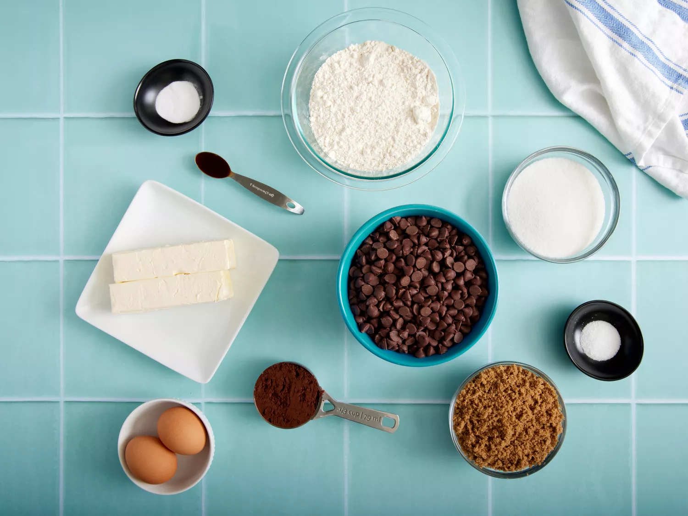
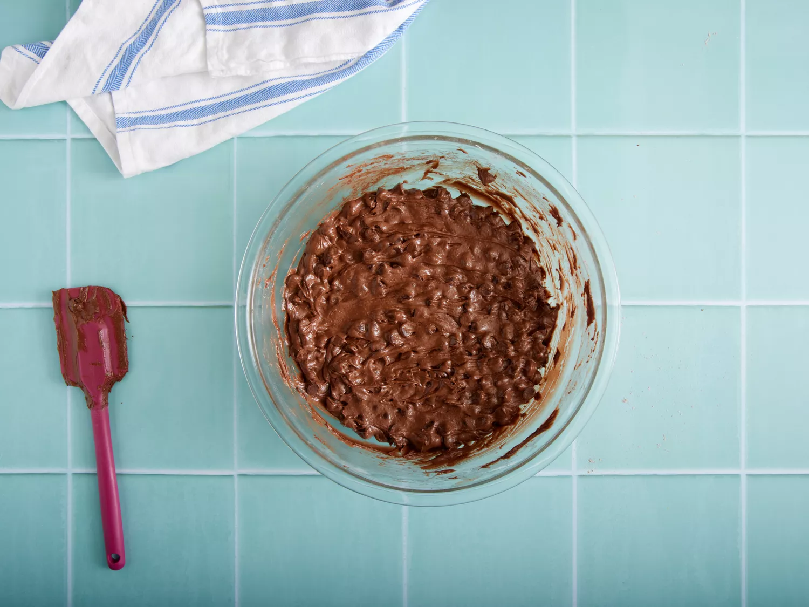
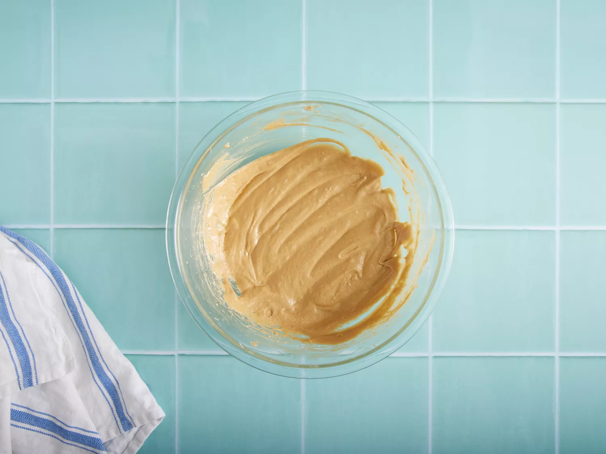
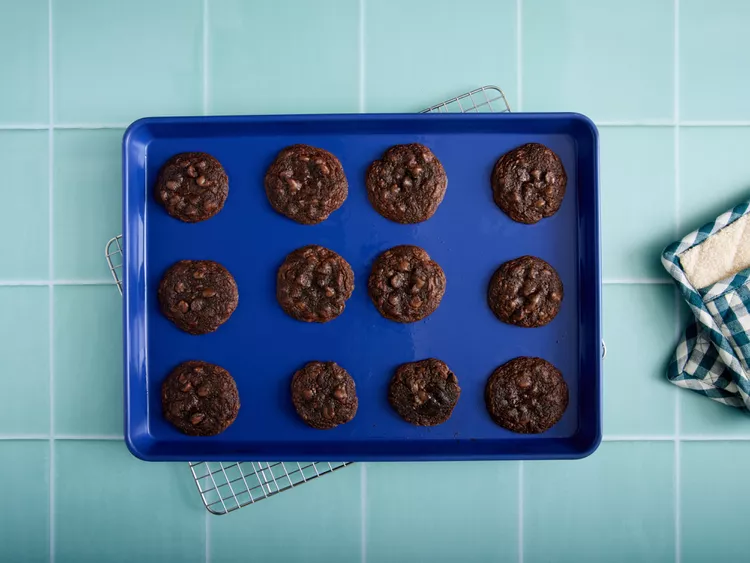
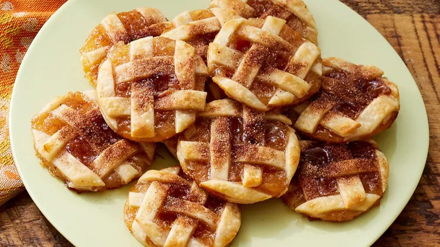
- Origin: Michigan
- Source: Family Recipe
- Category: Dessert
Recipe Ingredients
- 1 package rolled refrigerated unbaked pie crusts
- 1 cup purchased apple pie filling
- 1/4 cup caramel sauce
- 1/2 teaspoon apple pie spice or ground cinnamon
- 1/4 cup sugar
- 2 tablespoons all-purpose flour
- 1/4 teaspoon salt
Recipe Steps
- Gather all ingredients. Preheat oven to 425 degrees F (220 degrees C). Let pie crusts stand according to package directions. Line 2 baking sheets with parchment paper; set aside.
- Transfer apple pie filling into a food processor. Lightly pulse apple pie filling in a food processor until in 1/4-inch chunks.
- Roll one pie crust into a 14-inch circle on a lightly floured piece of parchment paper.
- Using a pizza cutter or a sharp knife, cut 1/4-inch wide strips.
- Cover cut pie dough with parchment paper or plastic wrap and set aside.
- Roll remaining pie crust dough into a 13-inch circle on a lightly floured piece of parchment paper.
- Spread caramel sauce over rolled pastry.
- Create a lattice top with dough strips by alternately placing strips on top of the filling.
- Using a 2 1/2-inch diameter cookie cutter, cut rounds from pastry. Transfer cookies to the prepared baking sheets.
- Stir together sugar and apple pie spice in a small bowl. Brush cookies with half and half and sprinkle cookies with sugar and spice mixture.
- Cool on baking sheets on wire racks for 20 minutes. Remove cookies to a serving tray and serve warm.
Additional Food images
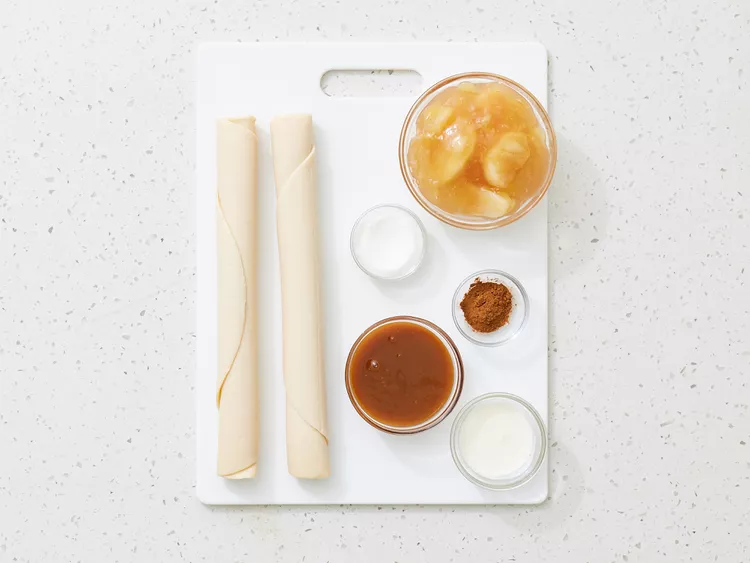
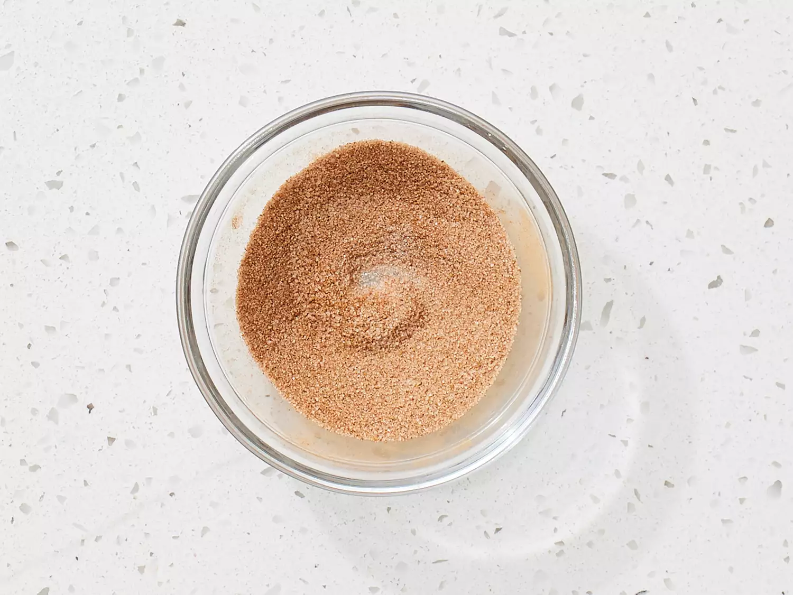
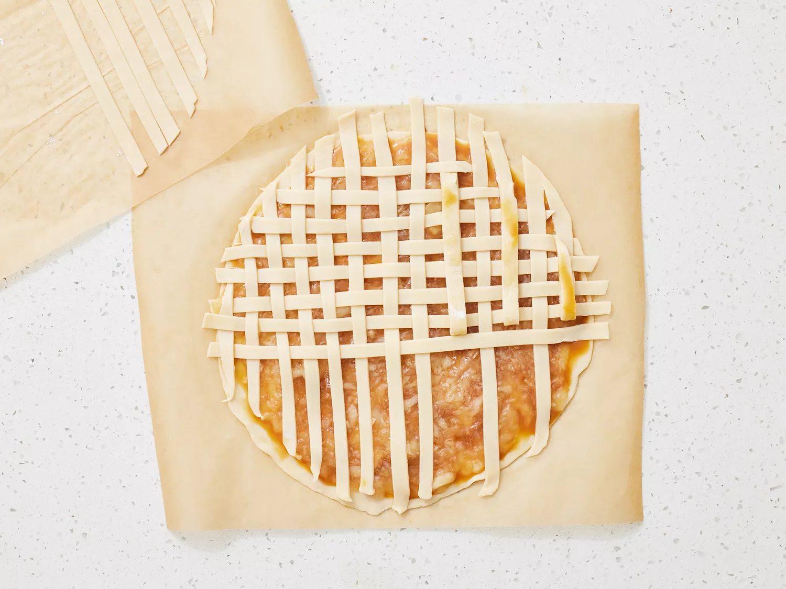

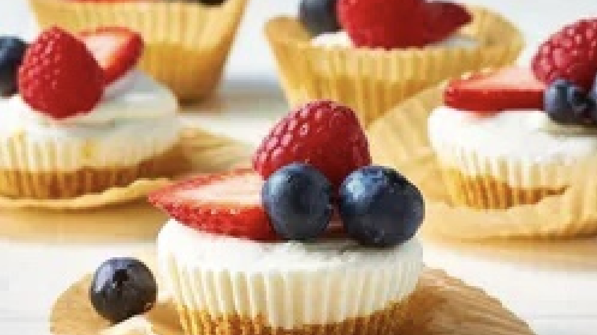
- Origin: Michigan
- Source: Family Recipe
- Category: Dessert
Recipe Ingredients
- Graham cracker crumbs
- Brown sugar
- Butter
- Heavy whipping cream
- Cream cheese
- Powdered sugar
- Fruit
- Sour cream
- Lemon juice
Recipe Steps
- For crust, combine graham cracker crumbs, brown sugar, and melted butter in a small bowl until evenly combined.
- Press 1 rounded tablespoon of crumb mixture evenly into the bottom of the prepared muffin pan. Freeze crusts until set while you prepare the filling, 15 to 20 minutes.
- Beat cream cheese and sugar in a large bowl on medium-high speed until smooth and creamy, about 2 minutes.
- Add the sour cream, lemon juice, and vanilla extract to the cream cheese mixture. Beat until combined, about 1 minute.
- Place the filling in a resealable 1 quart plastic bag. Snip off the corner of the bag to create a 1/2-inch opening.
- Pipe into prepared muffin pans, using about 2 1/2 tablespoons of mixture per cup. Smooth the tops as desired.
- Refrigerate, covered, for 3 hours or up to 5 days. Top with fresh berries or toppings of your choice.
Additional Food images
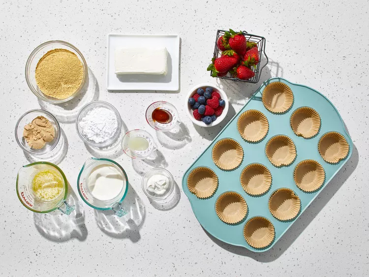
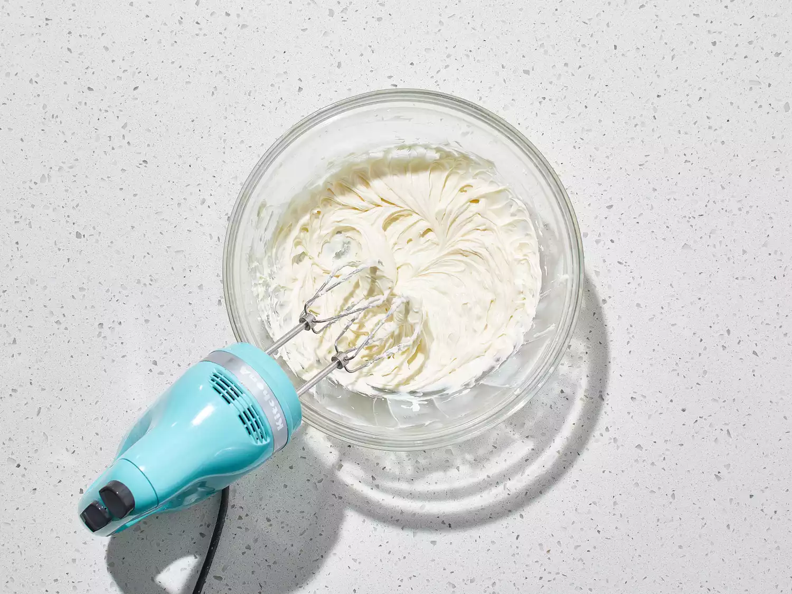
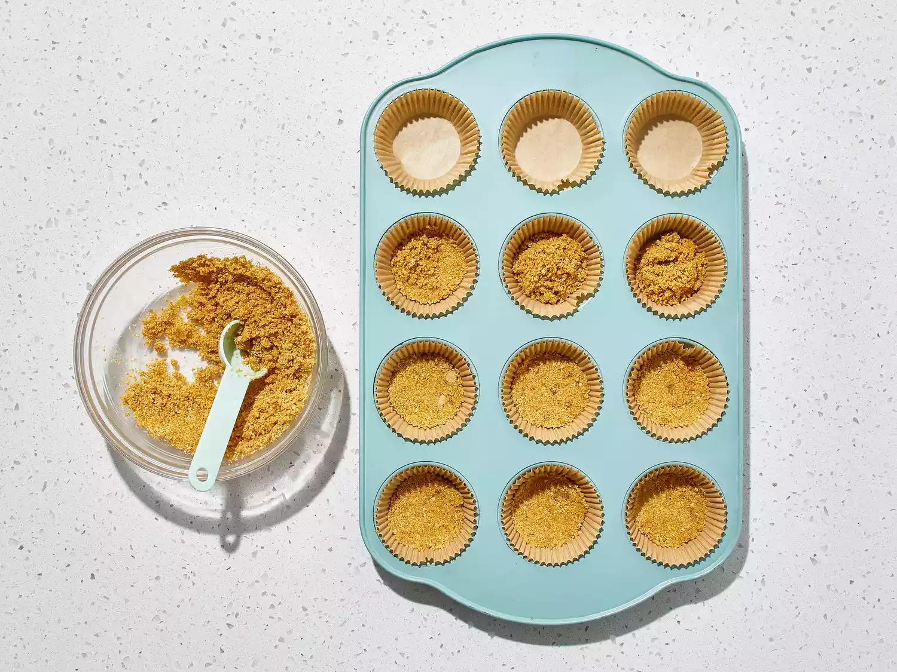
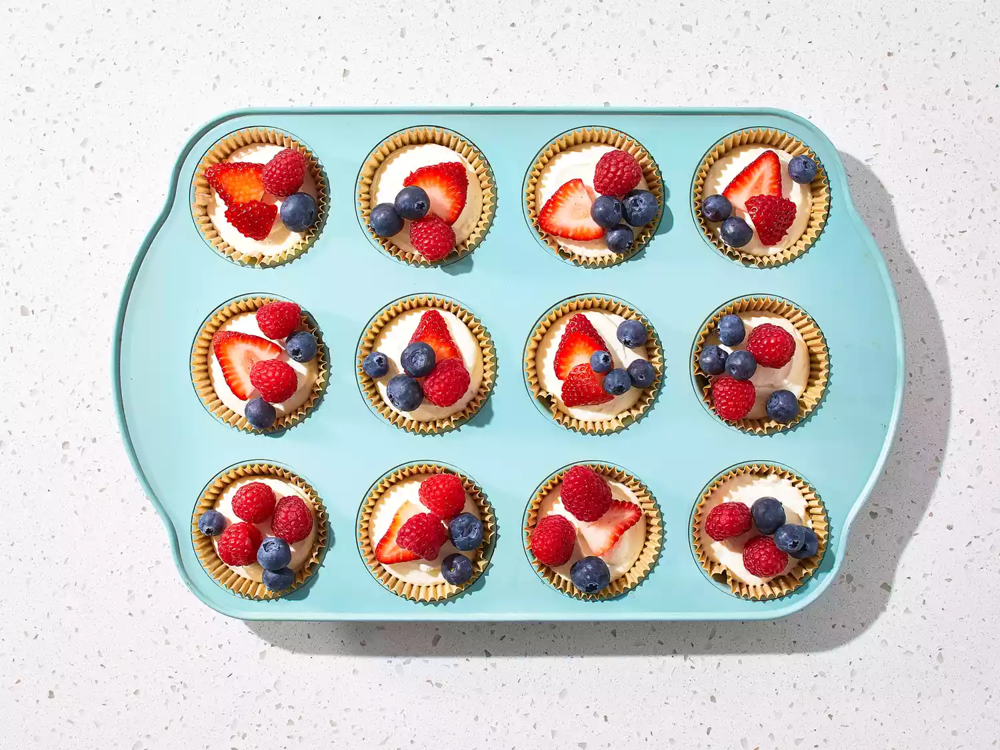